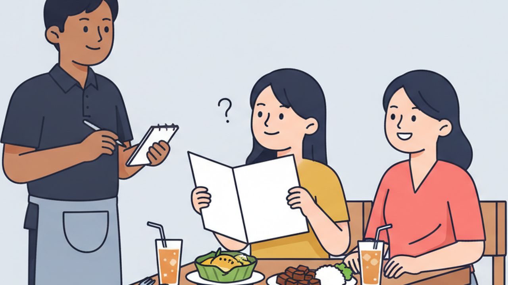

ロールプレイング ⑦
レストランで注文する

場面設定
プノンペンのカンボジア料理店。日本人のお客様（女性）が2人で来店し、おすすめを聞いて注文する。途中で料理がなかなか来ないので声をかけ、最後に会計をして出る場面。注文から会計までを一通り通してある。
登場人物: お店のスタッフ／お客様（បង、女性を想定）
この教材と同じテーマの聞き流し動画「聞き流しクメール語219単語【レストランと買い物】」は 11月20日 に公開予定です。公開されたら、ここに動画が出ます。
保存されるファイル名: 07_レストランで注文する_v1.0_20261105.pdf
会話
お店のスタッフ
ជម្រាបសួរ!
មកប៉ុន្មានអ្នកដែរបង?
お客様
ជម្រាបសួរ!
ពីរនាក់។
お店のスタッフ
សូមអញ្ជើញអង្គុយតុនេះ។
នេះមីនុយបង។
お客様
អរគុណ។
ហាងនេះម្ហូបណាឆ្ងាញ់ជាងគេ?
お店のスタッフ
ម្ហូបខ្មែរនៅហាងនេះឆ្ងាញ់ណាស់។
តើបងចូលចិត្តសាច់ឬត្រី?
お客様
ខ្ញុំចូលចិត្តត្រី។
សុំកម្ម៉ង់ម្ហូបត្រីមួយ និងបាយពីរចាន។
お店のスタッフ
ចាស។
តើបងចង់ញុាំភេសជ្ជះអ្វីដែរ?
お客様
សុំស្រាបៀរកម្ពុជាមួយកំប៉ុង
និងសូមទឹកមួយកែវ។
お店のスタッフ
ចាស។
តើយកហឹរទេ?
お客様
សូមកុំដាក់ហឹរ។
ខ្ញុំញុាំហឹរមិនបានទេ។
お店のスタッフ
ចាស អត់អីទេ។
お客様
សូមទោសបង។
ម្ហូបខ្ញុំអត់ទាន់បានទេ។
តើត្រូវចាំយូរទេ?
お店のスタッフ
សូមទោសបង។
ខ្ញុំនឹងទៅមើលបន្តិច។
ចាំប្រហែលប្រាំនាទីទៀត។
お店のスタッフ
នេះម្ហូបបង។
សូមអញ្ជើញញុាំ។
お客様
អរគុណ។
ឆ្ងាញ់ណាស់!
お客様
ឆ្អែតហើយ។
សូមគិតលុយ។
お店のスタッフ
សរុបអស់ដប់ប្រាំដុល្លារបង។
お客様
តើអាចបង់តាមABAបានអត់?
お店のスタッフ
បានបង។
អរគុណច្រើនបង។
お客様
ម្ហូបឆ្ងាញ់ណាស់។
ខ្ញុំនឹងមកម្ដងទៀត។
フリートークにつながる質問
会話のあと、役を離れてこの質問で話を広げてみてください。答えは思いつく範囲で構いません。
質問 1
តើបងចូលចិត្តម្ហូបខ្មែរណាជាងគេ?
質問 2
តើបងញុាំហឹរបានទេ?
質問 3
តើបងធ្លាប់ញុាំម្ហូបជប៉ុនទេ?
扱った単語（61語）
| # | クメール語 | 読み方 | 意味 |
|---|---|---|---|
| 1 | មក | モーク | 来る |
| 2 | ប៉ុន្មាន | ポンマーン | いくつ |
| 3 | ដែរ | ダエ | 〜も（ក៏と対で使う）・文末に付けて問いを和らげる |
| 4 | នាក់ | ネアック | 〜名（人を数える） |
| 5 | សូម | ソーム | 〜してください（動作をお願いする） |
| 6 | អញ្ជើញ | オンチューニュ | どうぞ〜なさる（丁寧に勧める） |
| 7 | អង្គុយ | オンクイ | 座る |
| 8 | តុ | トッ | 机 |
| 9 | មីនុយ | メヌイ | メニュー |
| 10 | ហាង | ハーン | 店 |
| 11 | ម្ហូប | マホープ | 料理 |
| 12 | ឆ្ងាញ់ | チガニュ | 美味しい |
| 13 | ជាងគេ | チアン・ケー | いちばん〜 |
| 14 | ម្ហូបខ្មែរ | マホープ・クマエ | カンボジア料理 |
| 15 | ណាស់ | ナハ | とても |
| 16 | ចូលចិត្ត | チョールチャット | 好き |
| 17 | សាច់ | サッチ | 肉 |
| 18 | ត្រី | トライ | 魚 |
| 19 | សុំ | ソム | 〜ください（物を求める） |
| 20 | កម្ម៉ង់ | カモン | 注文する |
| 21 | និង | ヌン | 〜と（並べる） |
| 22 | បាយ | バーイ | ご飯 |
| 23 | ចាន | チャーン | 皿・〜杯 |
| 24 | ចង់ | チョン | したい |
| 25 | ញុាំ | ニャム | 食べる |
| 26 | ភេសជ្ជះ | ペーサチア | 飲み物 |
| 27 | ស្រាបៀរ | スラー・ビア | ビール |
| 28 | កម្ពុជា | カンプチア | カンボジア |
| 29 | កំប៉ុង | コンポン | 缶 |
| 30 | ទឹក | トゥック | 水 |
| 31 | កែវ | カエウ | グラス・〜杯 |
| 32 | យក | ヨーク | 取る |
| 33 | ហឹរ | ハル | 辛い |
| 34 | កុំ | コム | 〜しないで（禁止） |
| 35 | ដាក់ | ダック | 置く |
| 36 | បាន | バーン | できる・手に入れる |
| 37 | សូមទោស | ソーム・トーホ | すみません・ごめんなさい |
| 38 | អត់ទាន់ | オッ・トアン | まだ〜ない |
| 39 | ត្រូវ | トラウ | すべき |
| 40 | ចាំ | チャム | 待つ |
| 41 | យូរ | ユー | (時間的に)長い |
| 42 | នឹង | ヌン | （未来を表す） |
| 43 | ទៅ | タウ | 行く |
| 44 | មើល | ムール | 見る |
| 45 | បន្តិច | ボンティ | 少し |
| 46 | ប្រហែល | プロハエル | 〜くらい・たぶん |
| 47 | នាទី | ニアティー | 分（時間の単位） |
| 48 | ទៀត | ティエット | もう〜・さらに |
| 49 | ឆ្អែត | チアエト | 満腹だ |
| 50 | ហើយ | ハウイ | もう〜した・そして |
| 51 | គិតលុយ | クット・ルイ | お会計（お金を計算する） |
| 52 | សរុប | サーロップ | 合計 |
| 53 | អស់ | オホ | 全部で・かかる |
| 54 | អាច | アーチ | できる |
| 55 | បង់ | ボン | 支払う |
| 56 | តាម | ターム | 〜で・〜に沿って |
| 57 | ABA | エー・ビー・エー | ABA（カンボジアの銀行・送金アプリ） |
| 58 | ច្រើន | チュラウン | たくさんの |
| 59 | ម្ដងទៀត | ムドン・ティエット | もう一度 |
| 60 | ធ្លាប់ | トロアップ | 〜したことがある（慣れている） |
| 61 | ជប៉ុន | チャポン | 日本 |
表現・文法の解説
1料理は ចាន、飲み物は កែវ や កំប៉ុង で数える
数を言うときは「名詞＋数＋単位」の順。បាយពីរចាន（ご飯2杯）、ទឹកមួយកែវ（水1杯）、ស្រាបៀរមួយកំប៉ុង（ビール1缶）。ចាន は皿、កែវ はグラス、កំប៉ុង は缶。そのまま単位として使える。
2ជាងគេ で「一番」を作る
ជាង（チアン）が比較、គេ（ケー）が「ほかのもの」。合わせて ជាងគេ で「ほかの全部より」＝一番になる。ម្ហូបណាឆ្ងាញ់ជាងគេ?（どの料理が一番おいしいですか）。2つを比べるだけなら ជាងនេះ（これより）のように使う。
3អត់ទាន់…ទេ で「まだ〜していない」
ម្ហូបខ្ញុំអត់ទាន់បានទេ（料理がまだ来ていません）。អត់ទាន់（オッ・トアン）が「まだ〜ない」で、文末の ទេ と対で使う。មិនទាន់…ទេ（ムン・トアン）も同じ意味で使う（ខ្ញុំមិនទាន់ដឹងទេ＝まだ決まっていません）。
4កុំដាក់～ で「〜を入れないで」
កុំ（コム／コン）が禁止、ដាក់（ダック）が「入れる・置く」。កុំដាក់ហឹរ（辛くしないで）、កុំដាក់ទឹកកក（氷を入れないで）、កុំដាក់ស្ករ（砂糖を入れないで）。頭に សូម を付けると丁寧になる。
5គិតលុយ の直訳は「お金を考えて」
គិត（クット）は「考える」、លុយ（ルイ）は「お金」。合わせて「計算してください」＝お会計、になる。គិត の発音は難しく、「クット」と「クッ」の間くらい。トの口の形をするが、トの音は出さないイメージ。
6お腹の状態は ឃ្លាន と ឆ្អែត
ឃ្លាន（クリアン、空腹だ）と ឆ្អែត（チアエト、満腹だ）。ឃ្លានបាយហើយ（お腹がすきました）、ឆ្អែតហើយ（お腹いっぱいです）のように ហើយ を付けて使う。